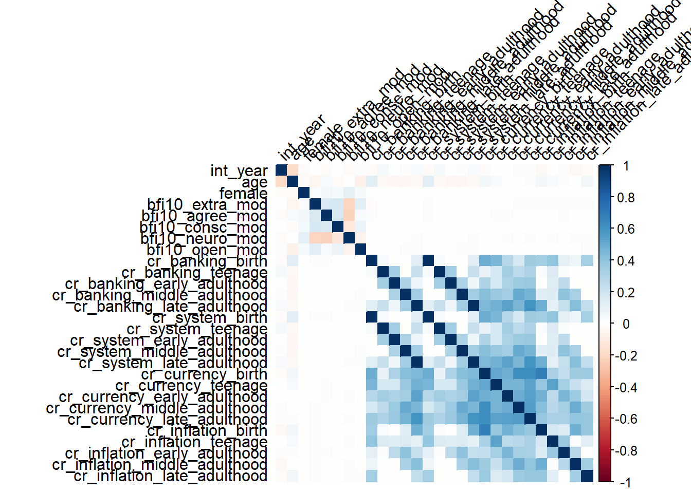
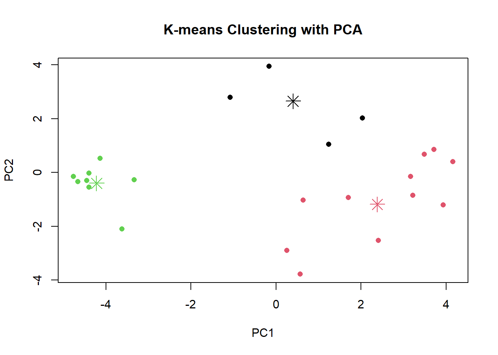
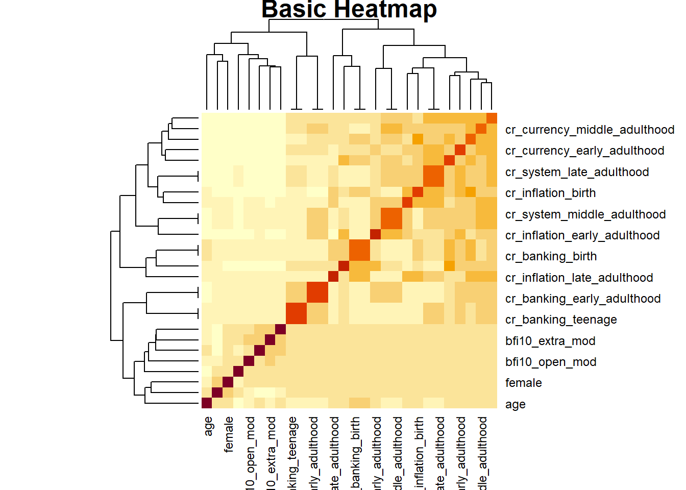

if (!requireNamespace("readr", quietly = TRUE)) {
install.packages("readr")
}
if (!requireNamespace("dplyr", quietly = TRUE)) {
install.packages("dplyr")
}
if (!requireNamespace("caret", quietly = TRUE)) {
install.packages("caret")
}
if (!requireNamespace("leaps", quietly = TRUE)) {
install.packages("leaps")
}
if (!requireNamespace("corrplot", quietly = TRUE)) {
install.packages("corrplot")
}
if (!requireNamespace("tidyr", quietly = TRUE)) {
install.packages("tidyr")
}
if (!requireNamespace("randomForest", quietly = TRUE)) {
install.packages("randomForest")
}
if (!requireNamespace("ggplot2", quietly = TRUE)) {
install.packages("ggplot2")
}
if (!requireNamespace("car", quietly = TRUE)) {
install.packages("car")
}
if (!requireNamespace("plotly", quietly = TRUE)) {
install.packages("plotly")
}
if (!requireNamespace("parallel", quietly = TRUE)) {
install.packages("parallel")
}
if (!requireNamespace("xgboost", quietly = TRUE)) {
install.packages("xgboost")
}
if (!requireNamespace("readxl", quietly = TRUE)) {
install.packages("readxl")
}
if (!requireNamespace("countrycode", quietly = TRUE)) {
install.packages("countrycode")
}RMKAgeing
Methodology
Describe Data
Preconditions
Install Packages
Load Packages
library(plotly)Warning: Paket 'plotly' wurde unter R Version 4.4.2 erstelltLade nötiges Paket: ggplot2
Attache Paket: 'plotly'Das folgende Objekt ist maskiert 'package:ggplot2':
last_plotDas folgende Objekt ist maskiert 'package:stats':
filterDas folgende Objekt ist maskiert 'package:graphics':
layoutlibrary(corrplot)Warning: Paket 'corrplot' wurde unter R Version 4.4.2 erstelltcorrplot 0.95 loadedlibrary(readr)Warning: Paket 'readr' wurde unter R Version 4.4.2 erstelltlibrary(caret)Warning: Paket 'caret' wurde unter R Version 4.4.2 erstelltLade nötiges Paket: latticelibrary(leaps)Warning: Paket 'leaps' wurde unter R Version 4.4.2 erstelltlibrary(tidyr)Warning: Paket 'tidyr' wurde unter R Version 4.4.2 erstelltlibrary(dplyr)Warning: Paket 'dplyr' wurde unter R Version 4.4.2 erstellt
Attache Paket: 'dplyr'Die folgenden Objekte sind maskiert von 'package:stats':
filter, lagDie folgenden Objekte sind maskiert von 'package:base':
intersect, setdiff, setequal, unionlibrary(randomForest)Warning: Paket 'randomForest' wurde unter R Version 4.4.2 erstelltrandomForest 4.7-1.2Type rfNews() to see new features/changes/bug fixes.
Attache Paket: 'randomForest'Das folgende Objekt ist maskiert 'package:dplyr':
combineDas folgende Objekt ist maskiert 'package:ggplot2':
marginlibrary(ggplot2)
library(car)Warning: Paket 'car' wurde unter R Version 4.4.2 erstelltLade nötiges Paket: carDataWarning: Paket 'carData' wurde unter R Version 4.4.2 erstellt
Attache Paket: 'car'Das folgende Objekt ist maskiert 'package:dplyr':
recodelibrary(parallel)
library(xgboost)Warning: Paket 'xgboost' wurde unter R Version 4.4.2 erstellt
Attache Paket: 'xgboost'Das folgende Objekt ist maskiert 'package:dplyr':
sliceDas folgende Objekt ist maskiert 'package:plotly':
slicelibrary(readxl)Warning: Paket 'readxl' wurde unter R Version 4.4.2 erstelltlibrary(countrycode)Warning: Paket 'countrycode' wurde unter R Version 4.4.2 erstelltLoad Dataset
Share dataset and World Development Indicators of the World Bank Group
SHARE_path <- "C:/Users/luisj/Documents/Github/FHRMK/RawData/easySHARE_rel9-0-0_R/easySHARE_rel9_0_0.rda"
WDIcountry_path <- "C:/Users/luisj/Documents/Github/FHRMK/RawData/WDI_CSV_2024_10_24/WDICountry.csv"
global_crisis_data_path <- "C:/Users/luisj/Documents/Github/FHRMK/RawData/20160923_global_crisis_data.xlsx"
#setwd(filePath)
load(SHARE_path)
WDIcountry_dataset <- read.csv(WDIcountry_path, header = TRUE, sep = ",")
global_crisis_data <- read_excel(global_crisis_data_path, na = c("",
"n/a",
"N/A",
"n.a.",
"NA"))
rm(SHARE_path, global_crisis_data_path)Clean Data
Get European country tags of financial Data
if (exists("WDIcountry_dataset")) {
CountryTags <- WDIcountry_dataset %>%
filter(Other.groups == "Euro area"
| Country.Code == "CHE"
| Country.Code == "ISR") %>%
select(Country.Code)
rm(WDIcountry_dataset) #CLEANUP
}
head(CountryTags) Country.Code
1 AUT
2 BEL
3 CHE
4 CYP
5 DEU
6 ESPSelect relevant Columns and rows, remove irrelevant Countries from Crisis Data
Remove data older than 20 years before the birth of the oldest participant.
relevant_first_year <- min(easySHARE_rel9_0_0$int_year - easySHARE_rel9_0_0$age, na.rm = TRUE) - 20
if (exists("global_crisis_data")) {
EU_crisis_dataset <- global_crisis_data %>%
select("CC3",
"Country",
"Year",
"Banking Crisis",
"Systemic Crisis",
"Gold Standard",
"Currency Crises",
"Inflation Crises") %>%
filter(Year >= relevant_first_year) %>%
inner_join(CountryTags, global_crisis_data, by = c("CC3" = "Country.Code"))
rm(global_crisis_data) #CLEANUP
}
EU_crisis_dataset %>%
distinct(Country, .keep_all = TRUE) %>%
head(6)# A tibble: 6 × 8
CC3 Country Year `Banking Crisis` `Systemic Crisis` `Gold Standard`
<chr> <chr> <dbl> <chr> <chr> <chr>
1 AUT Austria 1880 0 0 0
2 BEL Belgium 1880 0 0 1
3 FIN Finland 1880 0 0 1
4 FRA France 1880 0 0 1
5 DEU Germany 1880 1 1 1
6 GRC Greece 1880 0 0 0
# ℹ 2 more variables: `Currency Crises` <chr>, `Inflation Crises` <chr>Impute Values with median
easySHARE_rel9_0_0$income_pct_w9[is.na(easySHARE_rel9_0_0$income_pct_w9)] <- median(easySHARE_rel9_0_0$income_pct_w9, na.rm = TRUE)
NA_counts <- colSums(is.na(easySHARE_rel9_0_0))
NA_counts[NA_counts > 0]named numeric(0)Count number of participants with Big 5 personality trait answers
head(easySHARE_rel9_0_0) mergeid hhid coupleid wave wavepart int_version int_year
1 AT-000327-01 AT-000327-A AT-000327-01-02 1 12 0 2004
2 AT-000327-01 AT-000327-A AT-000327-01-02 2 12 1 2007
3 AT-000327-02 AT-000327-A AT-000327-01-02 1 12 0 2004
4 AT-000327-02 AT-000327-A AT-000327-01-02 2 12 1 2007
5 AT-000674-01 AT-000674-A 4 456 0 2011
6 AT-000674-01 AT-000674-A 5 456 1 2013
int_month country country_mod language female dn002_mod dn003_mod dn004_mod
1 6 11 40 11 0 7 1952 1
2 3 11 40 11 0 7 1952 1
3 6 11 40 11 1 7 1955 1
4 3 11 40 11 1 7 1955 1
5 11 11 40 11 1 3 1952 1
6 10 11 40 11 1 3 1952 1
age birth_country citizenship iv009_mod q34_re isced1997_r eduyears_mod
1 51.9 40 40 4 2 3 -15
2 54.7 40 40 5 -13 3 -3
3 48.9 40 40 4 2 3 3
4 51.7 40 40 5 -13 3 3
5 59.7 40 40 4 -13 5 3
6 61.6 40 40 4 -13 5 3
mar_stat hhsize partnerinhh int_partner age_partner gender_partner
1 1 2 1 1 48.9 1
2 1 2 1 1 51.7 1
3 1 2 1 1 51.9 0
4 1 2 1 1 54.7 0
5 6 1 3 -9 -9.0 -9
6 6 1 3 -9 -9.0 -9
mother_alive father_alive siblings_alive ch001_ ch021_mod ch007_hh ch007_km
1 1 1 -9 4 2 1 1
2 1 5 -9 4 2 1 1
3 5 5 1 4 2 1 1
4 5 5 1 4 2 1 1
5 5 5 -9 2 1 5 5
6 1 5 -9 2 3 5 5
sp002_mod sp003_1_mod sp003_2_mod sp003_3_mod sp008_ sp009_1_mod sp009_2_mod
1 5 -9 -9 -9 5 -9 -9
2 5 -9 -9 -9 5 -9 -9
3 5 -9 -9 -9 1 4 -15
4 5 -9 -9 -9 1 10 4
5 5 -9 -9 -9 5 -9 -9
6 5 -9 -9 -9 5 -9 -9
sp009_3_mod books_age10 maths_age10 language_age10 vaccinated
1 -9 -13 -13 -13 -13
2 -9 -13 -13 -13 -13
3 -15 -13 -13 -13 -13
4 -15 -13 -13 -13 -13
5 -9 -13 -13 -13 -13
6 -9 2 3 3 5
childhood_health sphus chronic_mod casp euro1 euro2 euro3 euro4 euro5 euro6
1 -13 1 0 37 0 0 0 0 0 0
2 -13 5 1 24 1 1 1 0 1 1
3 -13 1 0 38 0 0 0 0 0 0
4 -13 2 1 30 1 0 0 0 0 0
5 -13 3 1 44 0 0 0 0 0 0
6 2 3 2 45 0 0 0 0 0 0
euro7 euro8 euro9 euro10 euro11 euro12 eurod bfi10_extra_mod bfi10_agree_mod
1 0 0 0 0 0 0 0 -13 -13
2 0 1 1 0 1 1 9 -13 -13
3 0 0 0 0 0 1 1 -13 -13
4 0 1 0 0 0 1 3 -13 -13
5 0 0 1 0 0 0 1 -13 -13
6 0 0 0 0 0 0 0 -13 -13
bfi10_consc_mod bfi10_neuro_mod bfi10_open_mod hc002_mod hc012_ hc029_
1 -13 -13 -13 3 5 5
2 -13 -13 -13 20 1 5
3 -13 -13 -13 2 5 5
4 -13 -13 -13 6 5 5
5 -13 -13 -13 2 5 5
6 -13 -13 -13 2 5 5
maxgrip adlwa adla iadla iadlza mobilityind lgmuscle grossmotor finemotor
1 45 0 0 0 0 0 0 0 0
2 37 0 0 0 1 2 3 1 0
3 42 0 0 0 0 0 0 0 0
4 40 0 0 0 0 2 0 1 0
5 -15 0 0 0 0 0 0 0 0
6 -15 0 0 0 0 0 0 0 0
recall_1 recall_2 orienti numeracy_1 numeracy_2 bmi bmi2 smoking
1 5 4 4 4 -13 32.78799 4 5
2 7 7 4 5 -13 20.28123 2 5
3 8 7 4 4 -13 31.16137 4 5
4 8 7 4 5 -13 30.46112 4 5
5 2 1 4 5 5 24.02381 2 5
6 8 7 -15 -15 5 25.40282 3 5
ever_smoked br010_mod br015_ ep005_ ep009_mod ep011_mod ep013_mod ep026_mod
1 5 4 2 2 2 2 40 2
2 5 1 4 1 -9 -9 -9 -9
3 5 2 3 2 2 2 40 2
4 5 1 1 2 1 2 28 2
5 5 5 1 2 3 -9 50 1
6 5 5 1 1 -9 -9 -9 -9
ep036_mod co007_ thinc_m income_pct_w1 income_pct_w2 income_pct_w4
1 1 2 28721.850 6 -13 -13
2 -9 3 26432.822 -13 6 -13
3 5 2 28721.850 6 -13 -13
4 5 3 26432.822 -13 6 -13
5 5 4 9167.821 -13 -13 1
6 -9 4 14843.070 -13 -13 -13
income_pct_w5 income_pct_w6 income_pct_w7 income_pct_w8 income_pct_w9
1 -13 -13 -13 -13 -13
2 -13 -13 -13 -13 -13
3 -13 -13 -13 -13 -13
4 -13 -13 -13 -13 -13
5 -13 -13 -13 -13 -13
6 2 -13 -13 -13 -13Looking at how many people have values for big five personality traits.
citizens_with_bfp <- easySHARE_rel9_0_0 %>%
filter(birth_country %in% citizenship &
birth_country == country_mod) %>%
filter(bfi10_extra_mod > 0 &
bfi10_agree_mod > 0 &
bfi10_consc_mod > 0 &
bfi10_neuro_mod > 0 &
bfi10_open_mod > 0) %>%
distinct(mergeid, .keep_all = TRUE) %>%
summarise(count = n())
citizens_with_bfp count
1 84424We look at distinct people
Impute Crisis Data with 0
NA_counts <- colSums(is.na(EU_crisis_dataset))
NA_counts[NA_counts > 0] Banking Crisis Systemic Crisis Gold Standard Inflation Crises
294 11 411 202 EU_crisis_dataset$`Banking Crisis`[is.na(EU_crisis_dataset$`Banking Crisis`)] <- 0
EU_crisis_dataset$`Systemic Crisis`[is.na(EU_crisis_dataset$`Systemic Crisis`)] <- 0
EU_crisis_dataset$`Inflation Crises`[is.na(EU_crisis_dataset$`Inflation Crises`)] <- 0
EU_crisis_dataset$`Currency Crises`[is.na(EU_crisis_dataset$`Currency Crises`)] <- 0NA_counts <- colSums(is.na(EU_crisis_dataset))
NA_counts[NA_counts > 0]Gold Standard
411 head(EU_crisis_dataset)# A tibble: 6 × 8
CC3 Country Year `Banking Crisis` `Systemic Crisis` `Gold Standard`
<chr> <chr> <dbl> <chr> <chr> <chr>
1 AUT Austria 1880 0 0 0
2 AUT Austria 1881 0 0 0
3 AUT Austria 1882 0 0 0
4 AUT Austria 1883 0 0 0
5 AUT Austria 1884 0 0 0
6 AUT Austria 1885 0 0 0
# ℹ 2 more variables: `Currency Crises` <chr>, `Inflation Crises` <chr>Add columns - influenced by recessions at times in their lives
Add life ranges to share dataset
horizontal_crises <- EU_crisis_dataset %>%
pivot_longer(cols = c(`Banking Crisis`, `Currency Crises`, `Inflation Crises`),
names_to = "Crisis_Type",
values_to = "Crisis_Flag") %>%
filter(Crisis_Flag == 1) %>% # Keep only rows where the crisis occurred
group_by(CC3, Crisis_Type) %>%
summarise(Years = list(Year), .groups = "drop") %>%
pivot_wider(names_from = Crisis_Type, values_from = Years)
citizens <- citizens %>%
mutate(
range_birth = Map(seq, birth_year - 7, birth_year + 5),
range_childhood = Map(seq, birth_year + 6, birth_year + 10),
range_teenage = Map(seq, birth_year + 11, birth_year + 17),
range_early_adulthood = Map(seq, birth_year + 18, birth_year + 25),
range_middle_adulthood = Map(seq, birth_year + 26, birth_year + 35),
range_late_adulthood = Map(seq, birth_year + 36, birth_year + 45)
)
# TODO try analysis methods
matches <- citizens %>%
left_join(horizontal_crises, by = c("country_mod" = "CC3")) %>%
rowwise() %>%
mutate(
# Banking crisis
cr_banking_birth = as.integer(length(intersect(unlist(range_birth),
unlist(`Banking Crisis`))) > 0),
cr_banking_teenage = as.integer(length(intersect(unlist(range_teenage),
unlist(`Banking Crisis`))) > 0),
cr_banking_early_adulthood = as.integer(length(intersect(unlist(range_early_adulthood),
unlist(`Banking Crisis`))) > 0),
cr_banking_middle_adulthood = as.integer(length(intersect(unlist(range_middle_adulthood),
unlist(`Banking Crisis`))) > 0),
cr_banking_late_adulthood = as.integer(length(intersect(unlist(range_late_adulthood),
unlist(`Banking Crisis`))) > 0),
# Systematic crisis
cr_system_birth = as.integer(length(intersect(unlist(range_birth),
unlist(`Banking Crisis`))) > 0),
cr_system_teenage = as.integer(length(intersect(unlist(range_teenage),
unlist(`Banking Crisis`))) > 0),
cr_system_early_adulthood = as.integer(length(intersect(unlist(range_early_adulthood),
unlist(`Banking Crisis`))) > 0),
cr_system_middle_adulthood = as.integer(length(intersect(unlist(range_middle_adulthood),
unlist(`Banking Crisis`))) > 0),
cr_system_late_adulthood = as.integer(length(intersect(unlist(range_late_adulthood),
unlist(`Banking Crisis`))) > 0),
# Currency crisis
cr_currency_birth = as.integer(length(intersect(unlist(range_birth),
unlist(`Currency Crises`))) > 0),
cr_currency_teenage = as.integer(length(intersect(unlist(range_teenage),
unlist(`Currency Crises`))) > 0),
cr_currency_early_adulthood = as.integer(length(intersect(unlist(range_early_adulthood),
unlist(`Currency Crises`))) > 0),
cr_currency_middle_adulthood = as.integer(length(intersect(unlist(range_middle_adulthood),
unlist(`Currency Crises`))) > 0),
cr_currency_late_adulthood = as.integer(length(intersect(unlist(range_late_adulthood),
unlist(`Currency Crises`))) > 0),
# Inflation crisis
cr_inflation_birth = as.integer(length(intersect(unlist(range_birth),
unlist(`Inflation Crises`))) > 0),
cr_inflation_teenage = as.integer(length(intersect(unlist(range_teenage),
unlist(`Inflation Crises`))) > 0),
cr_inflation_early_adulthood = as.integer(length(intersect(unlist(range_early_adulthood),
unlist(`Inflation Crises`))) > 0),
cr_inflation_middle_adulthood = as.integer(length(intersect(unlist(range_middle_adulthood),
unlist(`Inflation Crises`))) > 0),
cr_inflation_late_adulthood = as.integer(length(intersect(unlist(range_late_adulthood),
unlist(`Inflation Crises`))) > 0)
) %>%
ungroup() %>%
select(mergeid,
int_year,
age,
country_mod,
female,
bfi10_extra_mod,
bfi10_agree_mod,
bfi10_consc_mod,
bfi10_neuro_mod,
bfi10_open_mod,
# Banking
cr_banking_birth,
cr_banking_teenage,
cr_banking_early_adulthood,
cr_banking_middle_adulthood,
cr_banking_late_adulthood,
# System
cr_system_birth,
cr_system_teenage,
cr_system_early_adulthood,
cr_system_middle_adulthood,
cr_system_late_adulthood,
# Currency
cr_currency_birth,
cr_currency_teenage,
cr_currency_early_adulthood,
cr_currency_middle_adulthood,
cr_currency_late_adulthood,
# Inflation
cr_inflation_birth,
cr_inflation_teenage,
cr_inflation_early_adulthood,
cr_inflation_middle_adulthood,
cr_inflation_late_adulthood)
match_for_matrix <- matches %>%
select(int_year,
age,
female,
bfi10_extra_mod,
bfi10_agree_mod,
bfi10_consc_mod,
bfi10_neuro_mod,
bfi10_open_mod,
# Banking
cr_banking_birth,
cr_banking_teenage,
cr_banking_early_adulthood,
cr_banking_middle_adulthood,
cr_banking_late_adulthood,
# System
cr_system_birth,
cr_system_teenage,
cr_system_early_adulthood,
cr_system_middle_adulthood,
cr_system_late_adulthood,
# Currency
cr_currency_birth,
cr_currency_teenage,
cr_currency_early_adulthood,
cr_currency_middle_adulthood,
cr_currency_late_adulthood,
# Inflation
cr_inflation_birth,
cr_inflation_teenage,
cr_inflation_early_adulthood,
cr_inflation_middle_adulthood,
cr_inflation_late_adulthood)Now these can be analyzed for the impact of recessions during times in their lives.
Plotting
correlation_matrix <- cor(match_for_matrix, use = "pairwise.complete.obs")
View(correlation_matrix)
png("correlation_plot_new.png", width = 2800, height = 2800)corrplot(correlation_matrix, method = "color", tl.col = "black", tl.srt = 45)
Pairplots/Scatterplot Matrix: Visualize relationships between features.
Principal Component Analysis (PCA): Reduce dimensionality and find key components.
Mutual Information: Measure dependency between variables.
Feature Importance: Use models like Random Forests to determine feature relevance.
Clustering (e.g., k-means, DBSCAN): Identify patterns or groupings.
set.seed(42)
scaled_data = scale(correlation_matrix)
pca <- prcomp(scaled_data)
pca_data <- pca$x[, 1:2] # Keep the first two components
kmeans_result <- kmeans(pca_data, centers = 3)
# Visualize PCA-based clustering
plot(pca_data, col = kmeans_result$cluster, pch = 16, main = "K-means Clustering with PCA")
points(kmeans_result$centers, col = 1:3, pch = 8, cex = 2)
- Heatmaps: Visualize patterns or distributions in data.
heatmap(correlation_matrix, main = "Basic Heatmap")
ANOVA or t-tests: Assess differences between groups.
Partial Correlation: Control for confounding variables.
Time Series Analysis: Study trends, seasonality, and cyclic behavior.
Residual Plots: Evaluate relationships and detect non-linear patterns.